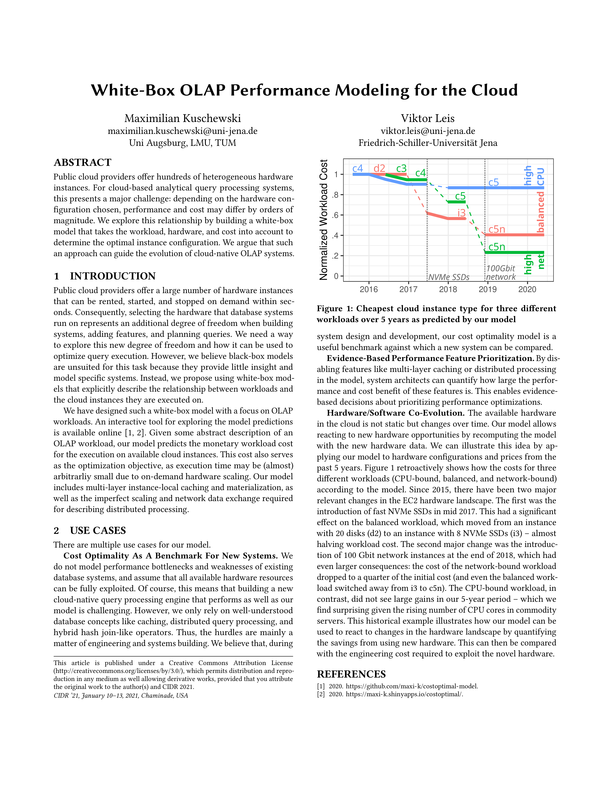
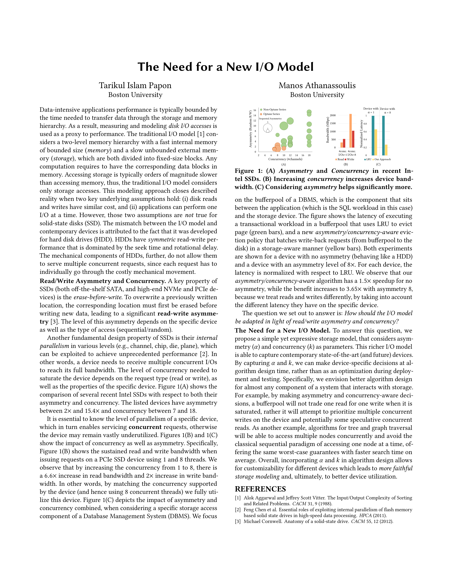

January 11-15 , 2021 Virtual Event
| Interference-aware Micro-architectural Resource Manager for Hybrid Workloads Utku Sirin (EPFL)*; Sandhya Dwarkadas (University of Rochester); Anastasia Ailamaki (EPFL) |
|
|  | Towards Cost-Optimal Query Processing in the Cloud Maximilian Kuschewski (Uni Augsburg, LMU, TUM); Viktor Leis (Friedrich Schiller University Jena)* |
|  | The Need for a New I/O Model Tarikul Islam Papon (Boston University); Manos Athanassoulis (Boston University)* |
| Using Deep Learning Models to Replace Large Materialized Views in Relational Database Jia Zou (Arizona State University) |
|
| Hamming Tree: The Case for Memory-Aware Bit Flipping Reduction for NVM Indexing Saeed Kargar (UCSC); Faisal Nawab (UC Santa Cruz)* |
|
| Automating State Management in Computational Notebooks Stephen Macke (University of Illinois at Urbana-Champaign)* |
|
| Cloud Observability: A MELTing Pot for Petabytes of Heterogenous Time Series Suman Karumuri (Slack); Franco Solleza (Brown University); Stan Zdonik (Brown University); Nesime Tatbul (Intel Labs and MIT)* |
|
| Data Cleaning in the Era of Data Science: Challenges and Opportunities El Kindi Rezig (MIT) |
|
| DataSense: Display-Agnostic Data Documentation Poonam Kumari (Buffalo)*; Mike Brachmann (Buffalo); Su Feng (Illinois Institute of Technology); Oliver A Kennedy (University at Buffalo, SUNY); Boris Glavic (Illinois Institute of Technology) |
|
| Scaling Data Science does not mean Scaling Machines Devin Petersohn (UC Berkeley)* |
|
| Accelerating Queries over Unstructured Data with ML Daniel Kang (Stanford University) |